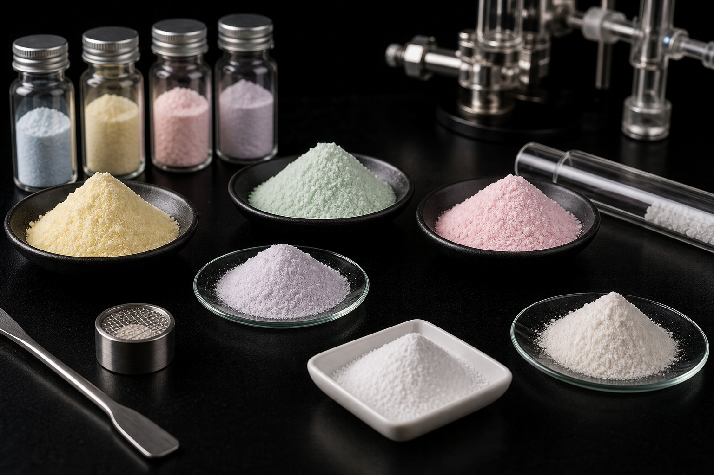

CVD Coating Materials / Anhydrous Chlorides
Anhydrous Chlorides
无水氯化物
Specifications
| Product Name | Anhydrous Chlorides |
|---|---|
| Chinese Name | 无水氯化物 |
| Product Line | CVD Coating Materials |
| Category | Anhydrous Chlorides |
| Formula / Composition | Customer-specific customization available |
| Purity | 99.9%~99.99% |
| Standard Size | 99.9%~99.99% |
| Packaging | 塑料瓶 |
| Customization | 是 |
Product Features
H2O＜0.5%
H2O<0.5%
Applications
生物制药、精细化学、化学化工催化剂
Used in biopharmaceuticals, fine chemicals, chemical catalysts, and related chemical processing applications.
바이오 의약품, 정밀 화학, 화학 촉매 및 관련 화학 처리 응용 분야에 사용됩니다.
Product Range
Available Anhydrous Chloride Grades
Anhydrous chlorides are available in multiple compositions and purity grades. Purity specifications can be customized according to customer requirements.
| Product Name | Chemical Formula | Grade | Purity Specification | CAS No. |
|---|---|---|---|---|
| Hafnium Tetrachloride | HfCl4 | 4N | ≥99.99%, Zr ≤0.01% | 13499-05-3 |
| Zirconium Tetrachloride | ZrCl4 | 3N5 | ≥99.95%, Hf ≤50 ppm | 10026-11-6 |
| Vanadium Trichloride | VCl3 | 3N | ≥99.9% | 7718-98-1 |
| Tantalum Pentachloride | TaCl5 | 5N | ≥99.999% | 7721-01-9 |
| Niobium Pentachloride | NbCl5 | 4N | ≥99.99%, Ta ≤10 ppm | 10026-12-7 |
| Molybdenum Pentachloride | MoCl5 | 4N | ≥99.99%, W ≤10 ppm | 10241-05-1 |
| Anhydrous Lanthanum Chloride | LaCl3 | 4N | REO ≥69.3%, La2O3/REO ≥99.99%, Cl ≥43.2%, H2O <0.5% | 10099-58-8 |
| Anhydrous Cerium Chloride | CeCl3 | 4N | REO ≥69.7%, CeO2/REO ≥99.99%, Cl ≥42%, H2O <0.5% | 7790-86-5 |
| Anhydrous Praseodymium Chloride | PrCl3 | 4N | REO ≥66.46%, Nd2O3/REO ≥99.99%, H2O <0.5% | 10361-79-2 |
| Anhydrous Neodymium Chloride | NdCl3 | 4N | Pr2O3/REO ≥99.99%, H2O <0.5% | 10024-93-8 |
| Anhydrous Samarium Chloride | SmCl3 | 4N | Sm2O3/REO ≥99.99%, H2O <0.5% | 10361-82-7 |
| Anhydrous Gadolinium Chloride | GdCl3 | 4N | Gd2O3/REO ≥99.99%, H2O <0.5% | 10138-52-0 |
| Anhydrous Terbium Chloride | TbCl3 | 4N | Tb2O3/REO ≥99.99%, H2O <0.5% | 10042-88-3 |
| Anhydrous Dysprosium Chloride | DyCl3 | 4N | Dy2O3/REO ≥99.99%, H2O <0.5% | 10025-74-8 |
| Anhydrous Holmium Chloride | HoCl3 | 4N | Ho2O3/REO ≥99.99%, H2O <0.5% | 10138-62-2 |
| Anhydrous Erbium Chloride | ErCl3 | 4N | Er2O3/REO ≥99.99%, H2O <0.5% | 10138-41-7 |
| Anhydrous Thulium Chloride | TmCl3 | 4N | Tm2O3/REO ≥99.99%, H2O <0.5% | 13537-18-3 |
| Anhydrous Ytterbium Chloride | YbCl3 | 4N | Yb2O3/REO ≥99.99%, H2O <0.5% | 10361-91-8 |
| Anhydrous Lutetium Chloride | LuCl3 | 4N | Lu2O3/REO ≥99.99%, H2O <0.5% | 10099-66-8 |
| Anhydrous Yttrium Chloride | YCl3 | 4N | Y2O3/REO ≥99.99%, H2O <0.5% | 10361-92-9 |
| Anhydrous Scandium Chloride | ScCl3 | 4N | Sc2O3/REO ≥99.99%, H2O <0.5% | 10361-84-9 |
Note: Purity specifications can be customized according to customer requirements.
RFQ Checklist